Maison Moinet · Vichy
Confiserie artisanale à Vichy, en famille depuis 1852.
Sept générations de confiseurs : pastilles du Bassin de Vichy, bonbons glacés façonnés à la main, pâtes de fruits d’Auvergne et boîtes en fer à collectionner.
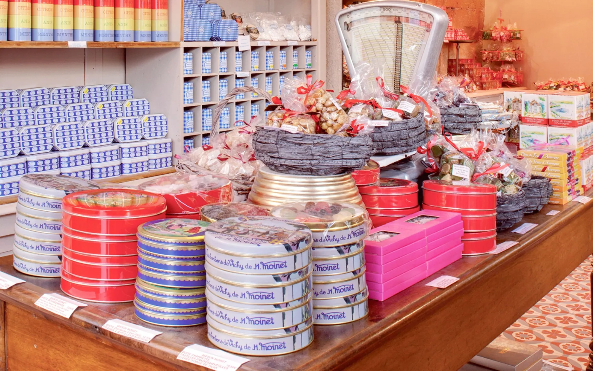
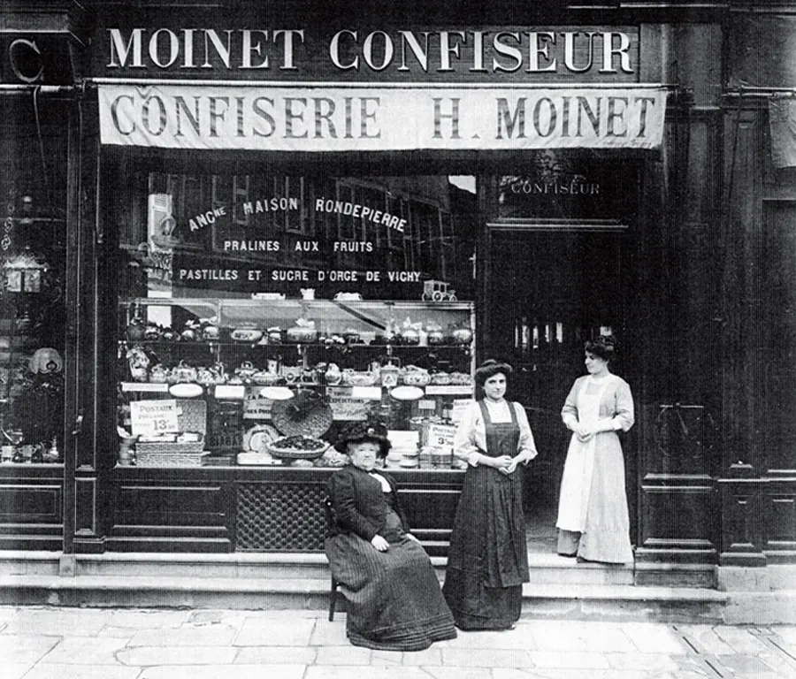
Six boutiques Moinet, de Vichy à l’île Saint-Louis
Depuis toujours, la Maison Moinet est à la fois fabricant et commerçant. Retrouvez nos douceurs dans la boutique historique de 1852, à Clermont-Ferrand et à Paris.
Voir les adresses et horaires- VichyConfiserie Moinet4, rue de la Source de l’Hôpital · la boutique historique
- VichyCôté Sucré11, rue Georges-Clemenceau
- VichyPastillerie Moinet2, rue Président Roosevelt
- VichyLa Galerie des Glaces1, rue Georges-Clemenceau · glaces artisanales
- Clermont-FerrandConfiserie Moinet1, place Royale · décor Art nouveau
- ParisMaison Moinet45, rue Saint-Louis-en-l’Île

La pastille du Bassin de Vichy
En 1932, Rémi Moinet achète la Source Roger, à Hauterive, pour en extraire les sels minéraux. Aujourd’hui, les pastilles représentent 80 % de notre production.
Voir toutes les pastillesLes spécialités d’Auvergne et du Bourbonnais
Sucres d’orge de Vichy, bonbons glacés du pays bourbonnais, pâtes de fruits pure pulpe d’Auvergne, caramels, nougats, pralines, chocolats : un savoir-faire transmis de génération en génération.
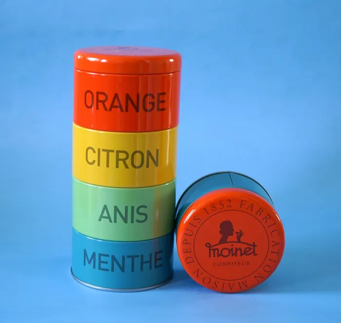
Menthe, citron, anis, orangePastilles du Bassin de Vichy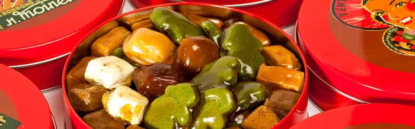
Façonnés à la mainBonbons glacés Pure pulpe d’AuvergnePâtes de fruits
Ballotins, mendiantsChocolats
Pure pulpe d’AuvergnePâtes de fruits
Ballotins, mendiantsChocolats
 Coquelicot, violette, verveineSucres d’orge de Vichy
Coquelicot, violette, verveineSucres d’orge de Vichy
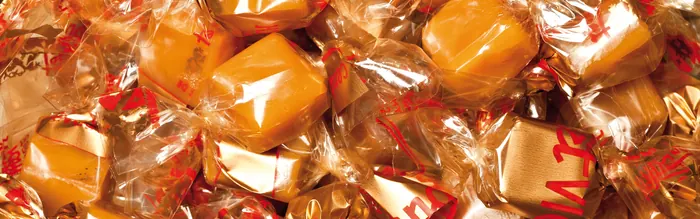
Recettes traditionnellesCaramels & nougats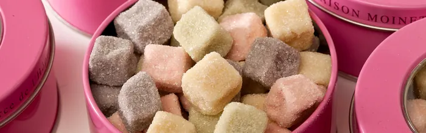
Réglisse, miel, mentholGommes & guimauves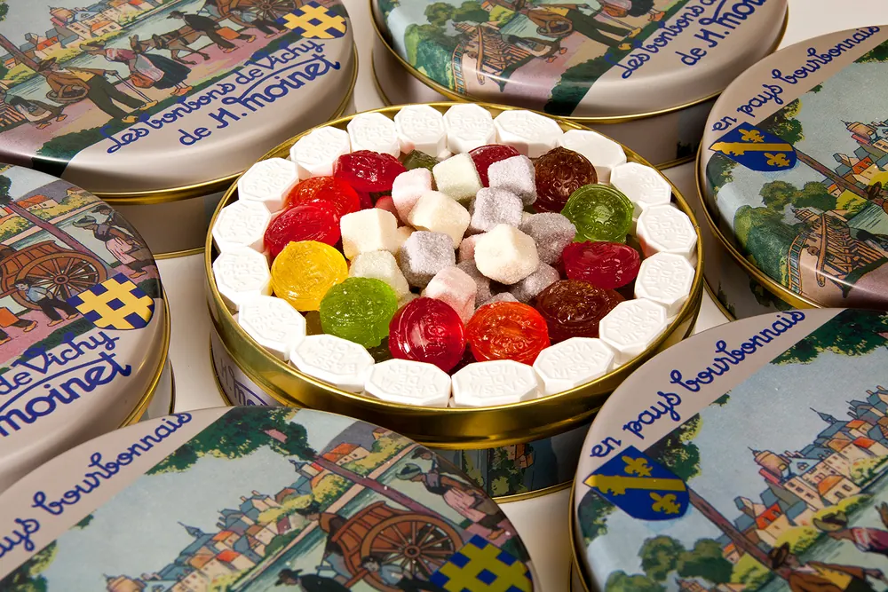
Coffrets et boîtes en ferIdées cadeaux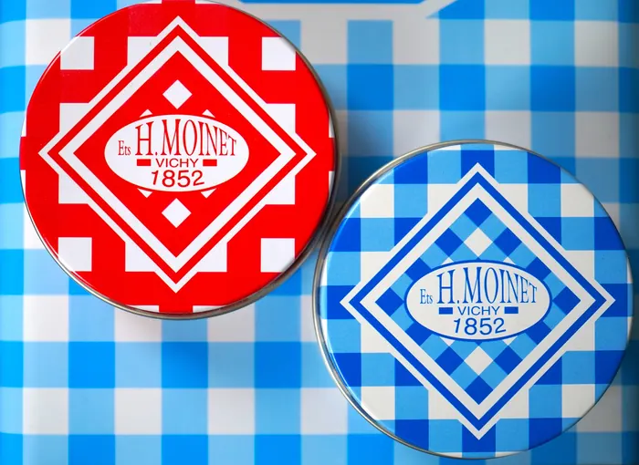
Boîtes, sacs, torchonsCarreaux Vichy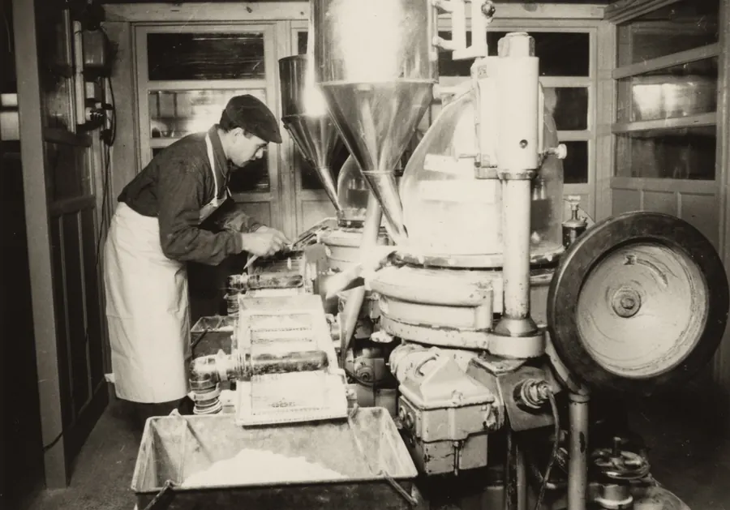
L’histoire d’une famille, de 1852 à la septième génération
La Maison Moinet est toujours dirigée par la même famille. Son histoire accompagne celle de Vichy, la Reine des villes d’eaux.
La confiserie voit le jour
Jules Rondepierre et Marie Madeleine Moinet s’installent rue de la Source de l’Hôpital. L’atelier de l’arrière-boutique en est encore le cœur.
La Source Roger
Rémi Moinet acquiert la source à Hauterive et lance ses propres pastilles du Bassin de Vichy.
La pastillerie du Bioparc
Une nouvelle unité de production s’implante à Hauterive, à deux pas de l’usine historique.
La septième génération
Lucas Michaille prend la responsabilité de la production, aux côtés d’Elisabeth et Gilles.
La Pastillerie Moinet
Une boutique dédiée aux pastilles ouvre rue Président Roosevelt, à Vichy.
Les boîtes Moinet, gravées pour Vichy
Dès les années 1930, Rémi Moinet dessine boîtes et prospectus et commande au graveur Paul Devaux des modèles qui représentent Vichy à différentes époques : Art Déco, Ancien Régime, Médiéval.
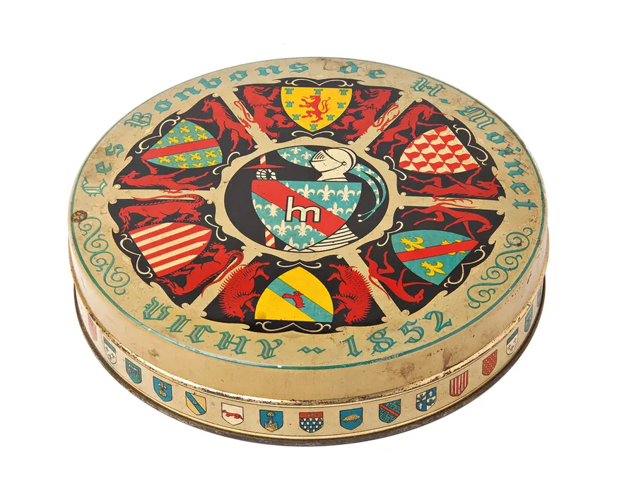
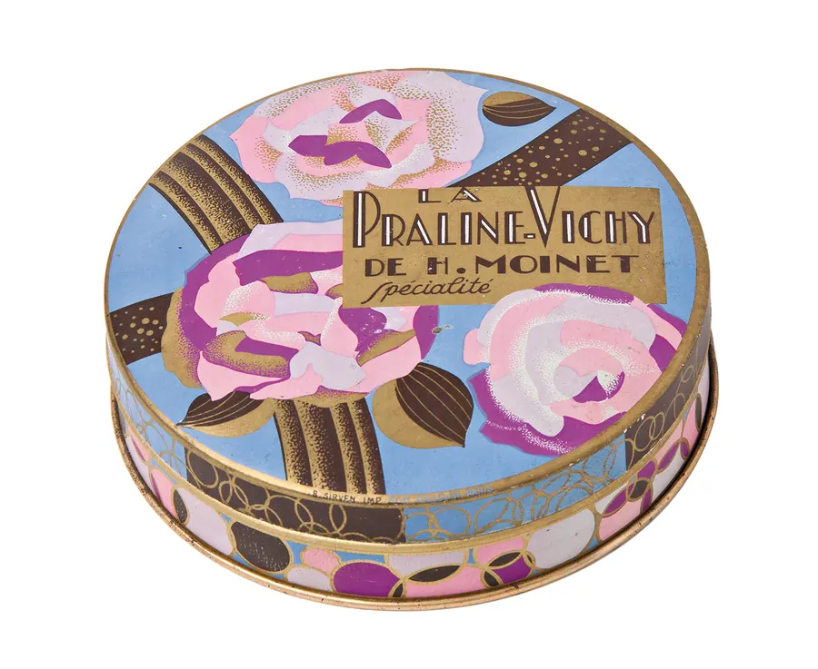
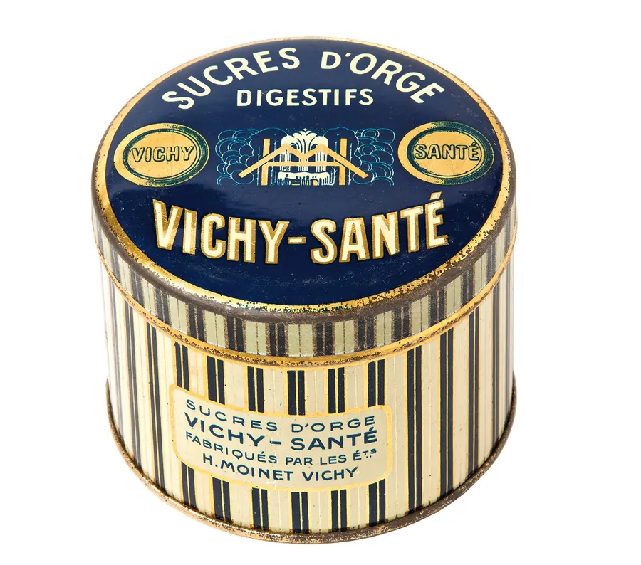
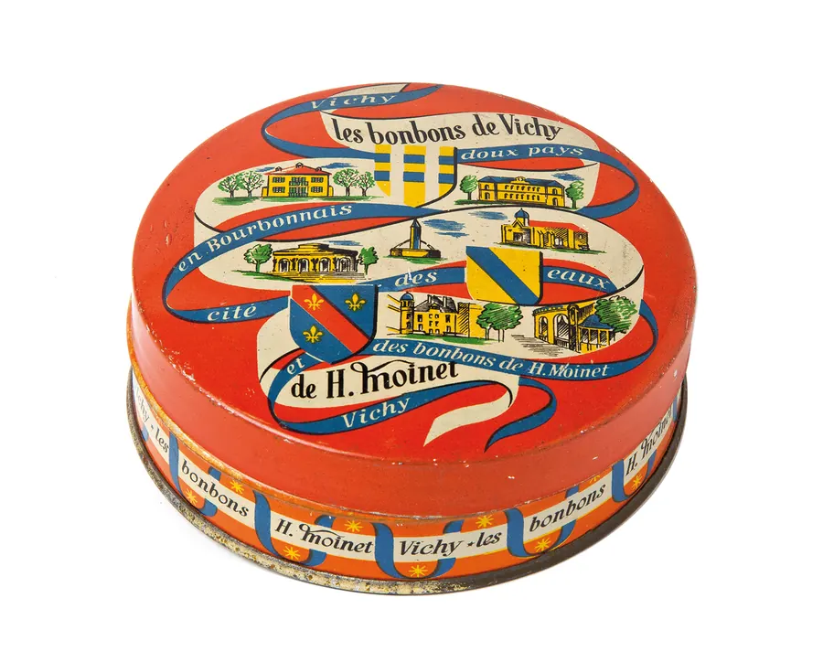
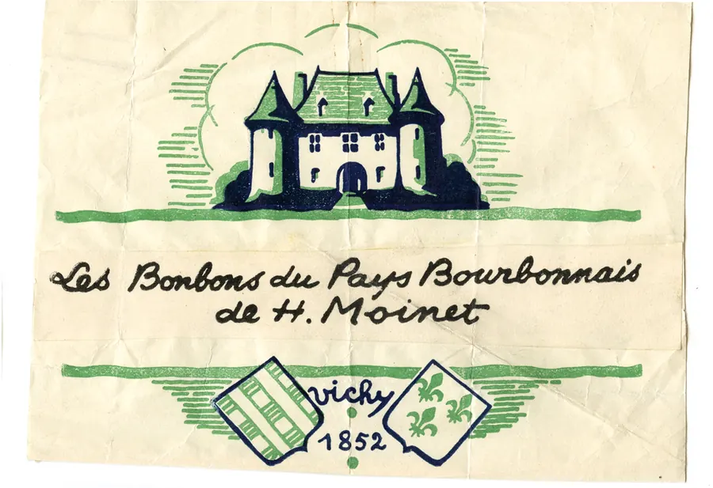
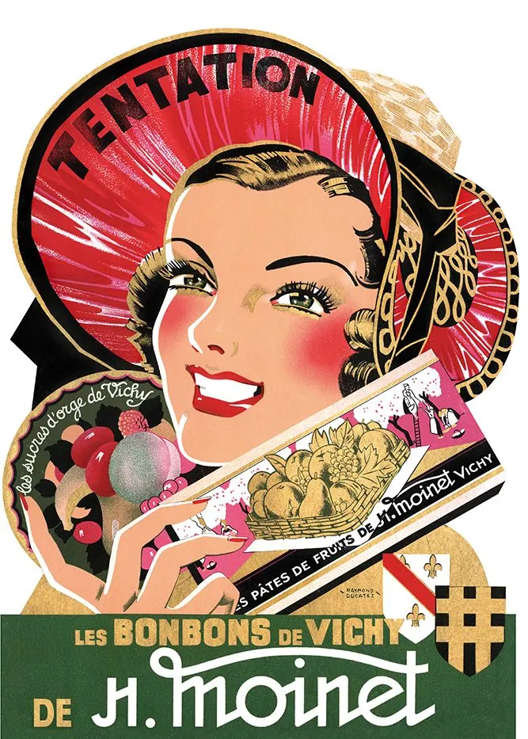
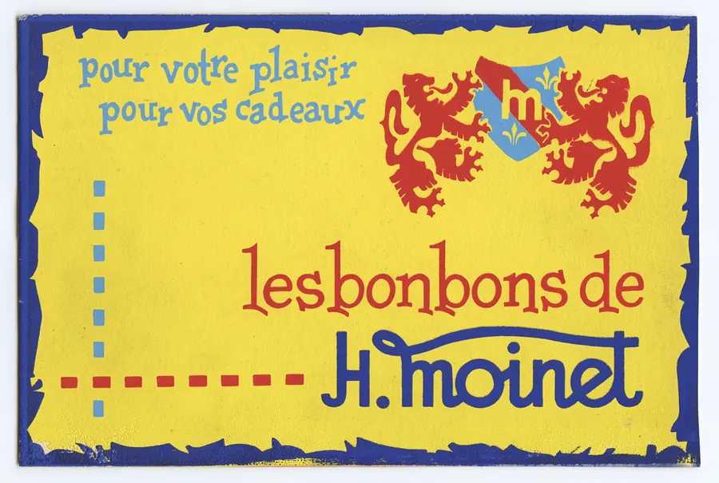
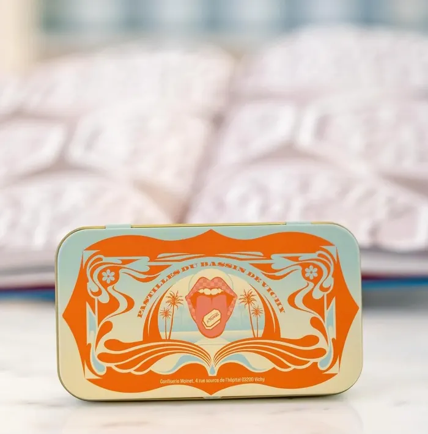

Des bonbons glacés façonnés un à un, comme des bijoux
Nos produits sont garantis « made in France », et même « made in Auvergne ». La réalisation des bonbons glacés, très technique, demande plusieurs étapes de façonnage à la main.
- Bonbons glacés, nougats, caramels et pralines élaborés de manière traditionnelle
- Chocolats façonnés artisanalement : tablettes, mendiants, ballotins
- Un atelier historique à Vichy et deux sites de production à Hauterive
Le Petit Futé, à propos de la Maison Moinet
C’est dans cette confiserie ayant gardé son âme d’antan que l’on trouve la célèbre pastille du Bassin de Vichy en versions anis, citron, orange et menthe.
Le Petit Futé · 2026 — Lire l’article du Petit Futé
Des recettes à la pastille de Vichy
Desserts frais, meringues ou millefeuille : la pastille du Bassin de Vichy passe en cuisine. Voir toutes les recettes

Plus de 150 douceurs, livrées chez vous
Des sachets de pastilles aux coffrets cadeaux. Paiement sécurisé par CB, Visa ou Mastercard, expédition en Colissimo Suivi.